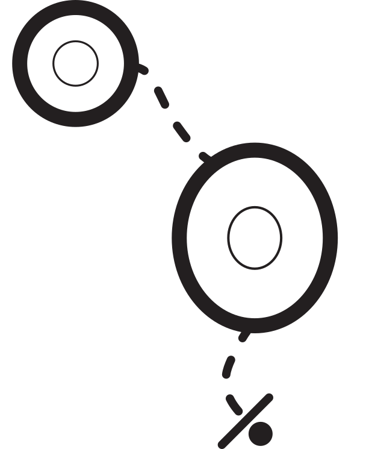
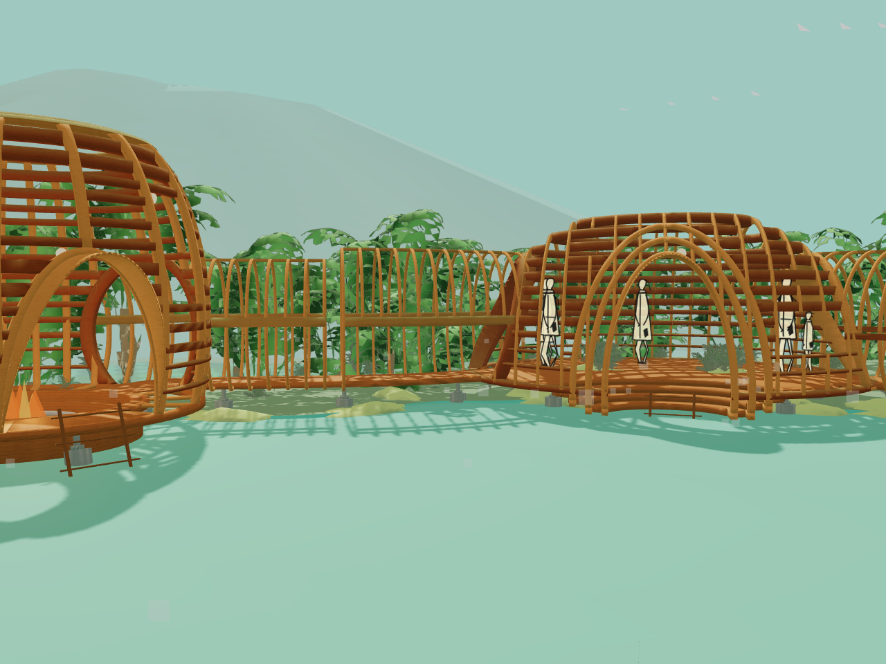
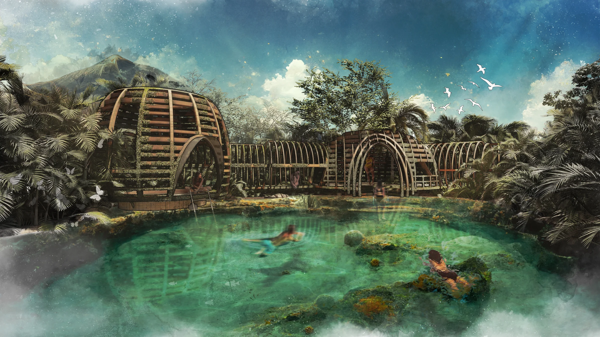

A sequence along the water
The proposal follows a progression through gates, connecting tunnels, and public and intimate sanctuary spaces. Compression and release shape the experience of moving beside the spring.

Tranquil RiverA hidden spring. A timber ribcage.
Tranquil Oasis explores a sequence of shelter and openness along the turquoise waters of Kikuletwa Hot Springs.

Tranquil Oasis explores a sequence of shelter and openness along the turquoise waters of Kikuletwa Hot Springs.
[Add the central design question, site response, spatial intentions, and the decisions that shaped the proposal.]
The proposal follows a progression through gates, connecting tunnels, and public and intimate sanctuary spaces. Compression and release shape the experience of moving beside the spring.
Repeated timber ribs give the sanctuary its architectural language. The source study describes African Mahogany and Teak ribbing, concrete piers, and a thatch crown. These elements frame water, light, and views.
The interactive model offers orbit and first-person views, material studies, water controls, and day-to-night atmosphere. Follow the route through the sanctuary or return to a broad perspective to understand how its spaces connect.

Site photographs and reference views that inform the project setting.